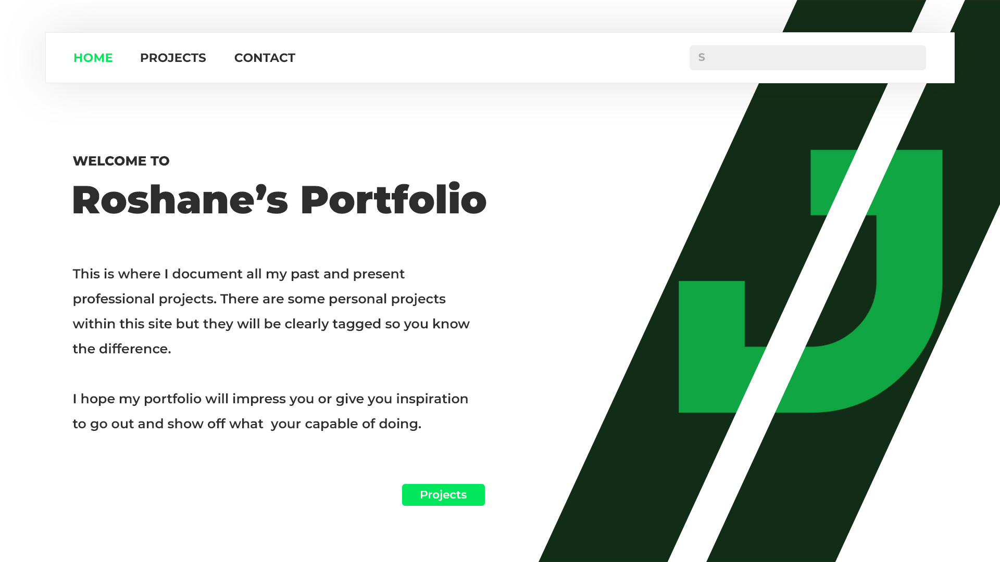

🔥 Projects 🔥

Portfolio Website
This project is the one you're currently viewing and intracting with right now. It is still in a development stage I will update as I learn new technologies and technologies I would like to experiment with and test out. Below you can see the current technologies being used to make this project possible.
HTML
CSS
Font-Awesome Icons
PHP (Integrating)
Jamaican Dictionary
This project solves the issue of foreigners trying to learn Patois but have no credible refrence point to start from, only random posts or information on the internet. Which are most times incorrect or outdated.
HTML
CSS
PHP